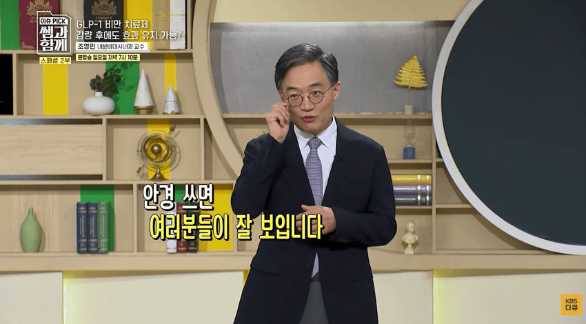

조영민 교수 : 그딴게 있겠냐? ㅋㅋㅋㅋ

살빼고 단약하면 유지 되나요?
조영민 교수 : 안경 쓰고 잘 보인다고 안경 벗으면 보이겠냐?
ㅋㅋㅋ
조영민 교수 : 그딴게 있겠냐? ㅋㅋㅋㅋ

살빼고 단약하면 유지 되나요?
조영민 교수 : 안경 쓰고 잘 보인다고 안경 벗으면 보이겠냐?
ㅋㅋㅋ
근데 천연위고비라고 하는 레시피는 그냥 계란 처먹어서 배부르니까 밥 덜먹는거 아니냐?ㅋㅋㅋㅋㅋㅋㅋㅋ 단백질 건강 식단이잖아
그것도 있음... 계란이랑 섬유질 지방으로 위를 채워넣고 포만감을 오래가게 하는거야. 그럼 밥 줄여 먹어도 식욕이 폭발하거나 위장이 꼬이게 배고프지 않음.
당뇨약 중에 dpp4 억제제라는 게 있을 정도로 자연적으로 분비되는 glp1도 그렇게 막 효과 없고 좆밥은 아님
언능 인도랑 짱!깨에서 카피약 뽑아내라고!!
뽑는중일걸?
소프트 아구통 ㅋㅋㅋㅋㅋㅋ
와 얘는 하루종일 위고비 글만 올리네
규정 위반임?
궁금해서 물어봄
도배 하면 눈쌀이 찌뿌려지고 다른 게시글이 묻히니 기분니가 안좋크든요
같은 주제로 혼자 계속올리면 규정 위반이긴 함
얼마전에 그걸로 고렙 한명 감 ㅋㅋㅋㅋㅋ
그냥 쓰는 글이 많은 거고 그 안에 여러가지 주제가 들어가는건데?
뭔 도배 ㅇㅈㄹ하고 자빠졌네
당장 내 작성글 1페이지만 봐도 비만약 관련은 이 글밖에 없는데?
그냥 글 많이 올리는 사람
워워 왤케 긁혔냐ㅋㅋ
긁히라고 긁는 글에 왜 긁혔냐고 함?
긁었으니 긁힌거지
왜 긁혔냐라고 물어보는게 맞냐 ㅋㅋㅋ
긁이라는 '유행어' 최근에 배웠나보네
혹시 직장다님? 다니면서 41렙이 가능함?
요새는 ai로 하루종일 댓글달고 다닐 수도 있더라
좀 다듬으면 다른 커뮤에서 퍼와서 자동으로 올리는 ai렉카도 가능할지도 모름
ㅋㅋㅋㅋㅋㅋ 여기서는 위고비 마운자로 단약해도 체중 유지가능하다는데ㅋㅋㅋㅋㅋㅋ
어디 서울대 교수가 멀 알고말이야!!
공식이 몰알아!!!
조금뺀애들은 유지 가능함
그런 경우겠지 ㅋㅋ
내가 마운자로 맞으면 어차피 평생맞아야 유지한다. 단약하면 복귀한다 그러면 꼭 그거 단약 후 식단, 운동 하면 몸무게 유지가능하다 하면서 그러던데ㅋㅋㅋㅋㅋㅋ
평생맞는 경우는 니 몸에 셋팅된 항상성을 넘어선 감량을 유지할때고 평소 널뛰기 하는 수준의 체중은 단약 후 생활습관 개선으로 가능하지
엥? 대사질환따위 의지로 다 극복 가능한데? 공부도 운동도 체질도 다 유전이지만 아무튼 비만 당뇨는 의지도르시치임
막댓은 틀렸음
소프트하게 이야기하면 못알아먹음
욕하고 줘패서 정신을 걸레짝 될 때까지 갈궈야 겨우 이해할까 말까임
강하게 패는게 진짜 강한거임
평범한 돼지들의 합리화 수단이 늘었군
여기서도 끝까지 악쓰고 정신론 설파하는 애들은 이제 평생동안 본인이 해온 노력이 개헛짓거리였을 까봐 무서워서 그러는거 이해한다
근데 그 노력 헛되지 않았고 모두 어느정도 관리 하면서 살고 살빠졌다 쪘다 하면서 사는거다 네 건강에 충분히 유의미했다
하지만 비만까지 가버린 돼지들은 돌아올 수 없다
우리같은 보통 사람이 요즘 살좀 쪘네 하고 러닝하고 식단 좀해서 3-4키로 빼고 하는거랑 다르다
비만부터는 아무리 노력해도 안된다 빠졌다가 다시 돌아간다
뇌의 기본 세트포인트가 저기 가버렸다 계속 배고프고 언제나 먹는것을 참아야한다 보통 사람은 그정도를 경험해보지 못했으니까 쉽게 정신론을 읊을 수 있는거지
한쪽 다리 없는 사람이 목발짚고 마라톤 완주하면 존나 내단하게 느껴지지않아? 근데 그 기준을 일반 장애인에게 가져다 댈 수 있는 기준인건지 한번 생각이란걸 해봐라
비만은 장애고 그 치료약이 나온거야
전혀 손 쓸 수 없는 중증 비만자들은 당연히 처방 받아야 하는데 내 주위나 커뮤니티, 스트리머 유튜버들 말 하는거 보면 '어 나 몇 kg 빼고 싶었는데 이 약 나오면...!' 하는 말 엄청 많이 함. 니가 비만도 아닌데 대체 그걸 왜 처먹냐며 빼고 싶으면 식습관 개선을 하던가 자꾸 약먹는다는 병신같은 소리좀 하지마라고 욕박고 잔소리 ㅈㄴ 했는데 그제서야 '음 그런가' 이러더라. 진짜 인간이 뭔가에 단단히 꽂혀서 눈 제대로 돌아가면 얼마나 무서운지 매번 느낌. 저번 커뮤에서도 약 함부로 먹으면 안된다고 했는데 십수명이 몰려와서 지랄을 해대는데 아무리 조목조목 알기 쉽게 설명해줘도 말이 안 통함. 경도 비만이거나 평균체중보다 조금 더 높은 그런 사람들이 제일 문제임. 이 집단이 남용에 빠질 가능성이 너무 높음. 그저 몇 kg만 빼보고 싶다며 약물에 친근감을 가지는 여자들도 위험집단이고
멀리서 찾을거있나 국장하면 되는데
안경 비유 약간 맥이는 거 같으면서 개웃기네 ㅋㅋㅋ
며칠전에 다이어트 신약 먹고 살 빼다가 약 끊으면 다시 되돌아갈 수 밖에 없고 의존성이나 기타 미처 발견되지 않은 위험성같은거 고려해서 진짜 심각한 사람 아니면 절대로 먹지 말고 자기 의지로 빼는게 베스트라고 했는데 떼로 처몰려와서 개지랄로 따져대는거 일일이 댓글로 계속 반박해주고 일꺠워주려 했는데 눈까리가 얼마나 단단히 처돌아갔는지 절대로 안 듣고 그 병신들 중에서 말 좀 한다는 새끼가 스스로 대표격으로 나와서 막 뭐라 하는데 말이 안 통해서 죽을뻔 ㅋㅋ 병신들은 뭘 알려줘도 알아처먹지를 못함
약 안꼽고 빼도 되돌아간다고 말 했으면 개지랄은 안했을 듯
천연 위고비는 위장절제술 밖에 없다
단약하면 얼마나 복구되는지 궁금증이 생겼는데
얼마전에 인간 하이닉스라고 수직상승하던 게시글이 떠오르네...
지금 당뇨도 있어서 당뇨치료제겸 마운자로맞는데
걍 평생 맞을라고. 7.5부터 개빡시긴한데 못표체중되면 5.0으로 줄이고 평생 살아가야지 ㅎ
소프트아구통ㅋㅋㅋㅋ